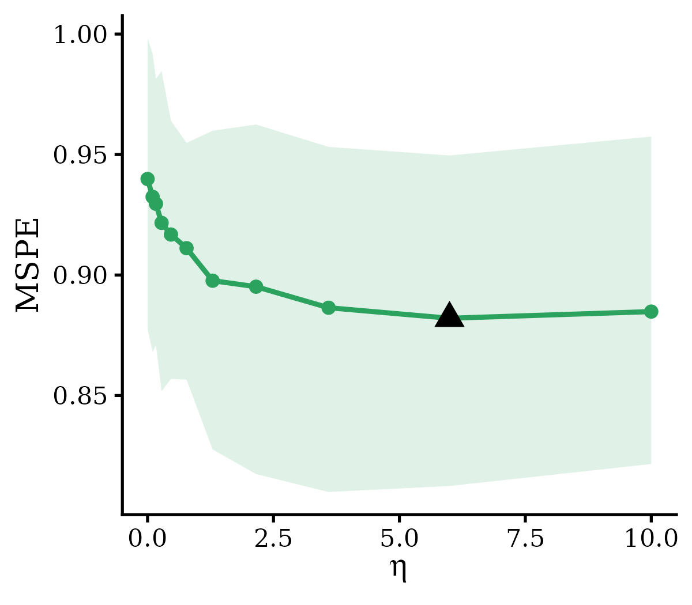
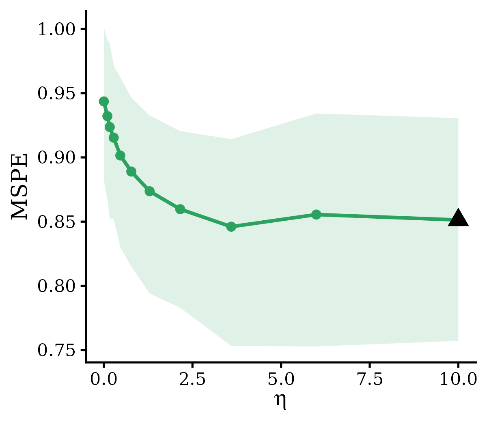
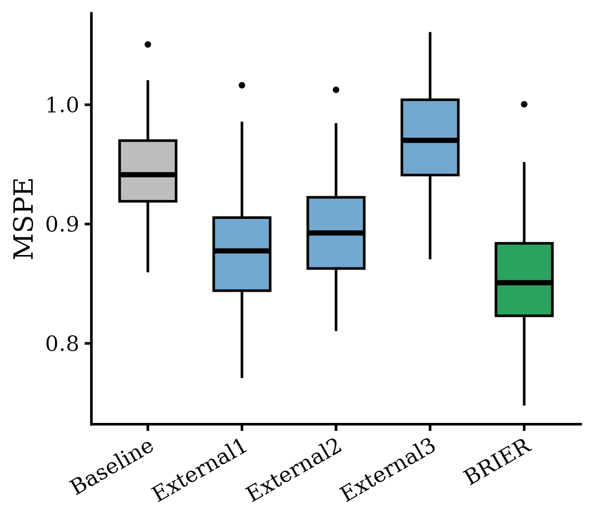

Integration of Multiple External Models
Appendix_Multiple.Rmd1. Introduction
In many genetic risk prediction applications, multiple external models are available rather than a single source. For example, in genetically regulated expression (GReX) modeling for transcriptome-wide association studies (TWAS), the goal is to predict tissue-specific gene expression from genotype data, and the target tissue of interest is often paired with eQTL summary statistics from many related tissues collected by the GTEx project (e.g., 49 tissues in GTEx v8). Since cis-eQTL effects are often shared across biologically related tissues, leveraging external models trained in non-target tissues can substantially improve predictive performance in the target tissue, particularly for tissues with limited sample size. Naively integrating each external model with its own integration weight, however, leads to a hyperparameter space that grows exponentially in the number of external sources, making joint tuning computationally prohibitive.
To address this, BRIER provides four strategies for
integrating multiple external models, controlled by the
multi.method argument:
-
"ind": each external model is assigned its own independent integration weight \(\eta_m\). This is the most flexible option, but the hyperparameter space grows multiplicatively with the number of external sources, so it is only computationally practical when the number of external models is small (typically \(M \leq 3\)). -
"PCA": the external coefficient matrix is collapsed onto its leading principal direction, and that single combined model is integrated with the target. This reduces the multidimensional penalty space to a one-dimensional one and reduces tuning cost. -
"stacking": the external models are first combined into a single ensemble model using stacking weights estimated from the target data, and the resulting ensemble is then integrated with the target through a single one-dimensional integration weight \(\eta\). This avoids joint optimization over multiple external-model weights while retaining flexible information borrowing across sources. -
"PCstacking": a combination of the two preceding strategies. The panel is first projected onto its leading principal directions, keeping as many components as are needed to cover a fractionpca.varof the variance (default \(0.8\)), and the retained components are then combined by stacking. Unlike"PCA", which always reduces to a single direction, this keeps several and lets the stacking weights choose among them. See Section 3.4.
Based on extensive simulation studies and real-data analyses, we
recommend the "stacking" strategy as a default. It
consistently achieves predictive performance comparable to the
gold-standard "ind" approach (which jointly tunes a
separate integration weight for each external model) while substantially
reducing computational burden. When the external models overlap heavily
with one another, as a set of published polygenic scores for the same
trait typically does, "PCstacking" is worth comparing
against it. Methodological details for all four strategies are provided
in the Appendix: Model Details.
In this vignette, we use BRIERs() (summary-level data)
as an illustrative example. The same workflow applies to
BRIERi() (individual-level target data with pre-trained
external models), with the only difference being the function name and
the form of the inputs.
2. Before integrating all external models
Users may have access to multiple external models, but it is often
undesirable to include all of them in the final integration. Some
external models may be well aligned with the target data and improve
predictive performance, whereas others may be highly heterogeneous and
provide little or no benefit. As a diagnostic step, we recommend
integrating each external model individually with the target data and
evaluating predictive performance on a testing set. The function
plot.eta (see Section 6.1 of
the main vignette) can then be used to visualize predictive
performance as a function of the integration weight \(\eta\), providing a direct read on the
degree of heterogeneity between the target data and each external
source.
The example below fits three single-external-model
BRIERs integrations, each pairing the same target dataset
with a different external model from the built-in dataset
Data_BRIERs:
library(BRIER)
data("Data_BRIERs")
data <- Data_BRIERs
## Shared target-cohort preprocessing
X <- data$target$train$X
summary <- data$target$train$sumstats
summary$corr <- p2cor(summary$pval, summary$n, sign = sign(summary$stats))
XtX.list <- calLD(X, summary)
X_val <- standardize_X(data$target$validation$X)[[1]]
y_val <- standardize_X(as.matrix(data$target$validation$y))[[1]]
eta.list <- c(0, exp(seq(log(0.1), log(10), length.out = 10)))
## Fit, tune, and visualize one external model at a time
for (m in 1:3) {
fit <- BRIERs(
sumstats = summary,
XtX = XtX.list$XtX,
beta.external = data$beta.external[, m],
eta.list = eta.list
)
fit <- BRIERs.selection(
fit, criteria = "gaussian.mspe",
X.val = X_val, y.val = y_val
)
out <- plot.eta(
fit,
X = data$target$testing$X,
covar.data = data$target$testing$y,
criteria = "gaussian.mspe",
standardize.data = TRUE,
bootstrap = TRUE
)
print(out$plot)
}The resulting \(\eta\)-curves for the three external models are summarized in the figure below. External models 1 and 2 show a clear improvement in predictive MSPE as \(\eta\) increases, indicating relatively low heterogeneity with the target data. In contrast, external model 3 (dashed light-green curve) shows no improvement across values of \(\eta\), suggesting substantial heterogeneity. Based on this diagnostic, users may reasonably exclude the third external model from the joint integration and proceed with only the first two.



3. Fitting BRIERs with multiple external models
Once the relevant external models have been selected, all of them can
be passed to BRIERs() as a single coefficient matrix
beta.external, with one column per external model. The
aggregation strategy is specified through the multi.method
argument.
3.1 Data format and preprocessing
We begin by loading the example dataset and preparing the target-cohort summary statistics, LD matrix, and stacked external coefficient matrix:
data("Data_BRIERs")
data <- Data_BRIERs
X <- data$target$train$X
summary <- data$target$train$sumstats
summary$corr <- p2cor(summary$pval, summary$n, sign = sign(summary$stats))
XtX.list <- calLD(X, summary)
## All three external models combined into a single coefficient matrix
beta.external <- data$beta.external
dim(beta.external)
# [1] p 3Each column of beta.external corresponds to one external
model, and the rows must be aligned with the columns of the target
predictor matrix. When external models are obtained from published
studies (e.g., published PRS weights), users may need to reconstruct the
coefficient vectors so that they match the target predictor set,
assigning zero to predictors absent from a given external model. For
genetic risk prediction with GWAS summary statistics, the helper
function preprocessS() performs this alignment
automatically; see Appendix: Data
Processing of Genetic Risk Prediction using BRIERs for details.
3.2 Fitting BRIERs with
multi.method = "stacking"
The function call is identical to the single-external-model case
shown in the main vignette, except that beta.external is
now a matrix and the aggregation strategy is specified through
multi.method:
fit <- BRIERs(
sumstats = summary,
XtX = XtX.list$XtX,
beta.external = beta.external,
eta.list = c(0, exp(seq(log(0.1), log(10), length.out = 10))),
multi.method = "stacking"
)To use a different aggregation strategy, simply replace
multi.method with "PCA",
"PCstacking", or "ind". We note that
multi.method = "ind" introduces one integration weight per
external model, so the candidate set passed to eta.list
should be specified as a list of vectors of length \(M\) rather than a single vector. See the Methods Appendix for additional details.
3.3 Redundant external models are removed first
Whenever more than one external model is supplied,
BRIERs() and BRIERi() begin by removing models
that duplicate one already kept. A repeated source cannot add
information: if one coefficient vector is a multiple of another, their
polygenic scores agree in every metric whatever the LD structure is.
Worse, a repeated source makes the stacking weights unidentifiable,
because those weights come from inverting \(B^\top X^\top X B\), which is singular the
moment two columns carry the same information. Panels assembled from
published scores contain such near-copies routinely, since they are
built from overlapping GWAS on overlapping variant panels.
The rule is applied to the coefficient vectors, and the first
occurrence of each near-identical set is the one retained. The
threshold is the dedup.cor argument, an absolute cosine
similarity that defaults to \(0.9\):
fit <- BRIERs(
sumstats = summary,
XtX = XtX.list$XtX,
beta.external = beta.external,
multi.method = "stacking",
dedup.cor = 0.9 # the default; NULL turns the step off
)
fit$external.dedup$dropped # which models were removed, and whyThree kinds of column are removed: those whose absolute cosine
similarity with an already-kept model reaches dedup.cor,
those that are entirely zero, and those that the retained set spans
exactly (a model equal to the sum of two others is uncorrelated with
either, so a pairwise comparison cannot see it). Ordering therefore
matters: place the model you would rather keep first. When columns are
dropped, the number of external sources \(M\) falls accordingly, and a
eta.list supplied as a list of length \(M\) is subset to the survivors rather than
raising a length error. The removal is always reported with a message,
never performed silently.
Because the threshold is a default rather than a claim about where
redundancy begins, set dedup.cor higher to remove only
near-exact copies, or NULL to disable the step entirely and
reproduce the behaviour of earlier versions.
3.4 Reducing the panel before combining it:
multi.method = "PCstacking"
Screened panels of published scores remain highly overlapping even after exact duplicates are removed. On a real application with ten retained scores, the participation ratio of their score-correlation eigenvalues indicated roughly five effectively independent directions. Combining all ten therefore means solving a ten-dimensional system whose low-variance directions carry mostly noise.
multi.method = "PCstacking" addresses this by projecting
the panel onto its leading principal directions before combining.
Components are added in order until the cumulative variance share
reaches pca.var, and the retained components are then
combined by stacking:
fit <- BRIERs(
sumstats = summary,
XtX = XtX.list$XtX,
beta.external = beta.external,
eta.list = c(0, exp(seq(log(0.1), log(10), length.out = 10))),
multi.method = "PCstacking",
pca.var = 0.8
)
fit$external.pca$n.pcs # how many components were kept
fit$external.pca$cumulative # cumulative variance share
fit$external.pca$rotation # the weight each model carries in each componentThe decomposition is deliberately uncentred. Centring across sources would subtract a mean model, which is not a meaningful reference here: each column is a model rather than a draw from a population, and a zero coefficient means the variant has no effect, not that it is below average. What enters the fit is the projection of the original models onto the leading directions, so the reduced panel stays on the same coefficient scale that \(\eta\) shrinks toward.
The reduction can also be applied on its own, which is useful for inspecting a panel before committing to a fit:
red <- reduceExternalsPCA(beta.external, pca.var = 0.8)
red$n.pcs
round(red$cumulative, 3)Two caveats are worth stating. First, the reduction is
unsupervised, so it follows variance, and a mis-scaled
external score is exactly the column with the most variance.
"PCstacking" is therefore appropriate only for a panel that
has already been screened for calibration against the target; applied to
an unscreened panel, it can amplify precisely the models that should
have been removed. Second, whether it improves on plain stacking is an
empirical question for a given panel. Fit both and compare on a held-out
split rather than assuming either ordering.
3.5 Hyperparameter tuning
Hyperparameter tuning for BRIERs with multiple external
models is performed using the same BRIERs.selection()
interface as in the single-external-model case. Both an independent
validation set and information-based criteria (Cp,
GIC, pseu.val) are supported.
X_val <- standardize_X(data$target$validation$X)[[1]]
y_val <- standardize_X(as.matrix(data$target$validation$y))[[1]]
fit <- BRIERs.selection(
fit, criteria = "gaussian.mspe",
X.val = X_val,
y.val = y_val
)See Section 5.3 of the main vignette for a full discussion of the available tuning criteria.
4. Evaluating the integrated model
Once BRIERs.selection() has identified the optimal \((\eta, \lambda)\), the same downstream
evaluation tools described in Section 6 of the main vignette can
be applied without modification. Below, we illustrate
plot.eta and plot.box evaluated on an
independent testing set:
## Predictive performance as a function of eta on the testing set
out <- plot.eta(
fit,
X = data$target$testing$X,
covar.data = data$target$testing$y,
criteria = "gaussian.mspe",
standardize.data = TRUE,
bootstrap = TRUE
)
out$plot
## Bootstrap distribution of predictive performance
out <- plot.box(
fit,
X = data$target$testing$X,
covar.data = data$target$testing$y,
criteria = "gaussian.mspe",
standardize.data = TRUE
)
out$plot

The left panel displays predictive MSPE on the testing set as a
function of the integration weight \(\eta\), with bootstrap-based uncertainty
bands. The right panel summarizes the distribution of MSPE across
bootstrap resamples for the target-only model, the external ensemble
alone, and the integrated BRIERs model. Together, these two
views provide a complete picture of how the multi-source integration
performs relative to its constituent models.
5. Extending to BRIERi
When individual-level target data are available together with
multiple pre-trained external models (rather than summary-level data),
BRIERi() follows exactly the same workflow described above.
The only differences are:
- the inputs are an individual-level design matrix
Xand outcome vectory, rather thansumstatsandXtX; - the multi-external coefficient matrix is passed through the same
beta.externalargument, with one column per external model and an intercept row included; - hyperparameter tuning uses
BRIERi.selection()and additionally supports cross-validation (BRIERi.cv()) in addition to validation-set and information-criterion-based tuning.
De-duplication and multi.method = "PCstacking" behave
identically in BRIERi(), BRIERi.cv(), and the
Bayesian-optimization entry points BRIERi.bopt() and
BRIERs.bopt(). The only difference is the intercept row:
BRIERi() expects beta.external to be \((p+1) \times M\), and both steps hold that
row out of the computation and carry it along with its column, so the
\((p+1)\) convention is preserved. For
the *.bopt() functions, bounds and
init.grid sized to the supplied panel are subset to the
surviving models when a duplicate is dropped.
See Section 4 of the main
vignette for the single-external-model BRIERi workflow;
the multi-external-model extension follows the same pattern as Sections
3–4 of this appendix.